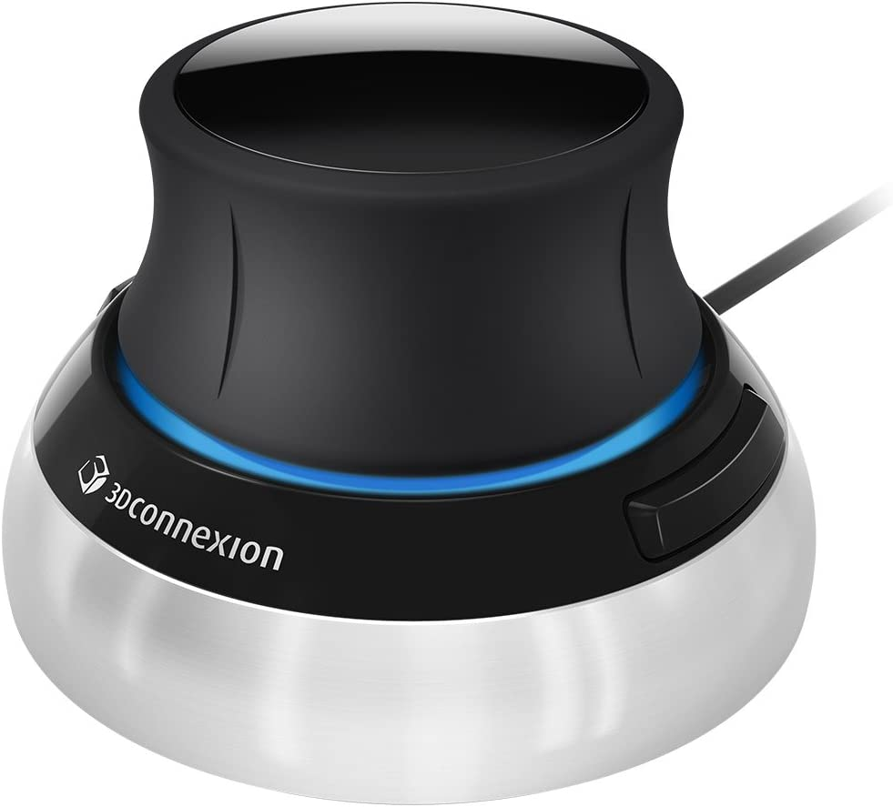
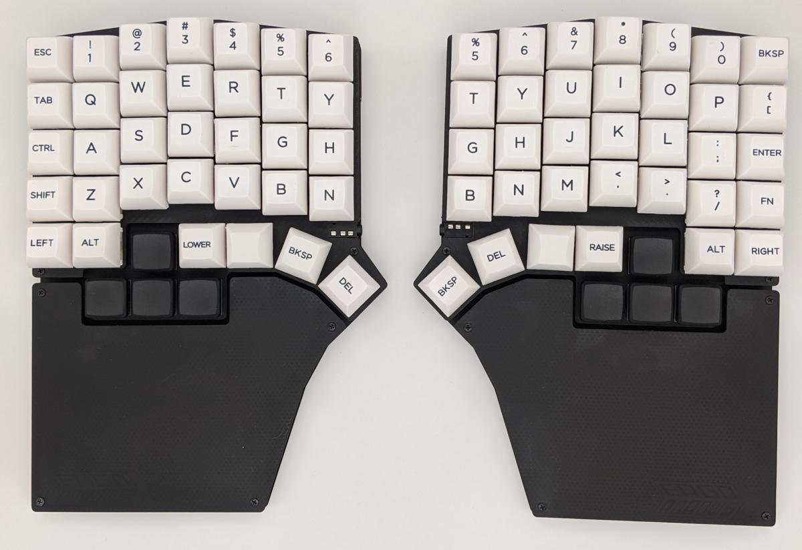
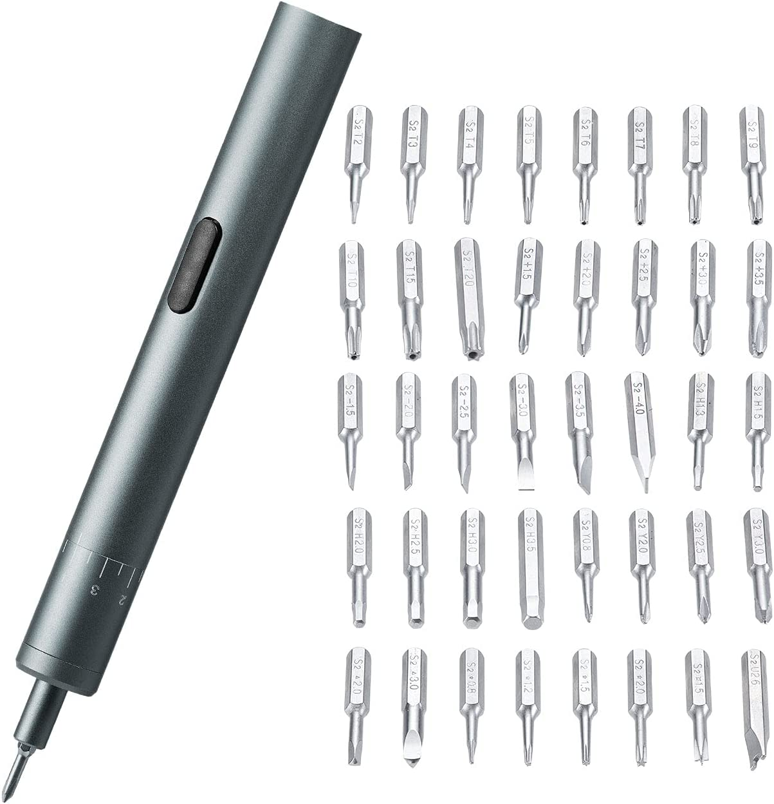
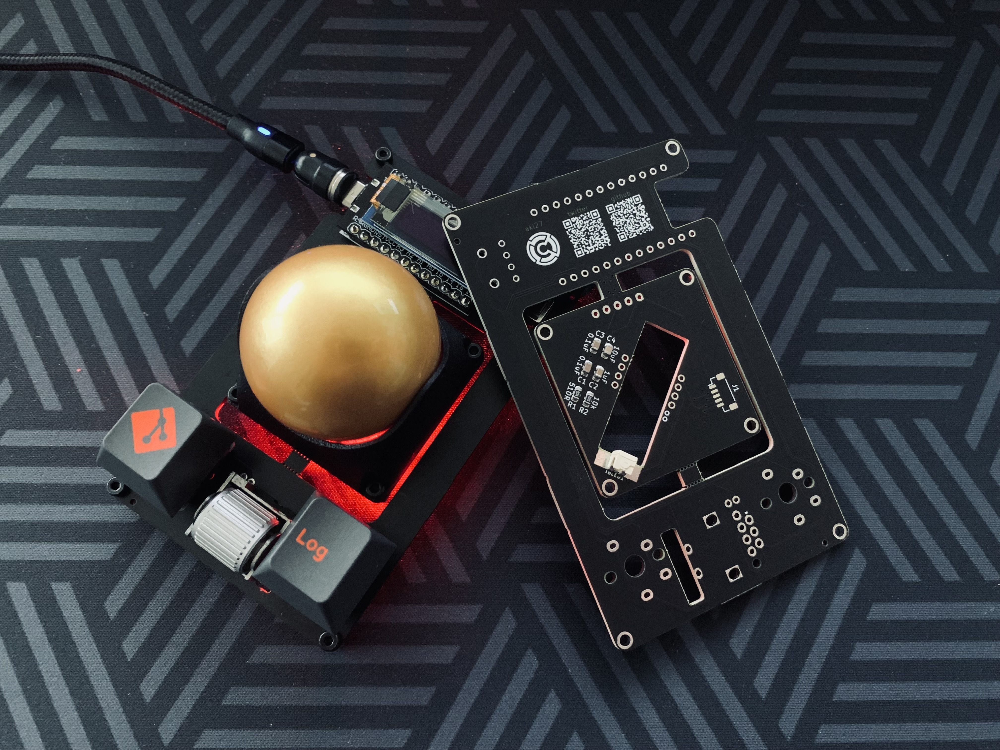
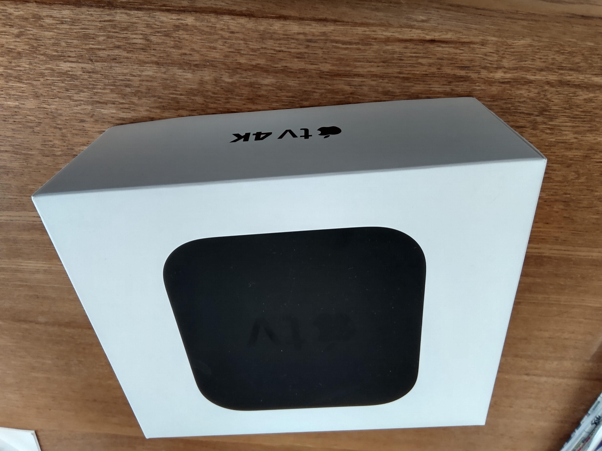

年末年始恒例記事


Nintendo SwitchのJoy-Conに直接取り付けて、USB給電できるケーブルです。純正のJoy-Con充電グリップは必然的に、充電中はJoy-Conを左右ペアで使うことになります。本製品はケーブルが左右二又に分かれているので、充電しながらJoy-Con横持ちなども可能です。
友人を招いてマルチプレイしようと思ったらバッテリー切れ、みたいな時に活躍します

会議室用のポータブルなスピーカーフォンです。モノラルスピーカーなので、ステレオよりも通話相手の声がハッキリ聞き取りやすくて重宝しています。スピーカーって何でもかんでもステレオで、モノラルスピーカーって中々無いんですよね。
Windows11のPCに繋ぐと、デフォルトのスピーカーとは別に「通話用のデバイス」として認識されるのがとても便利です。通話以外の音声はデフォルトのスピーカーから流しつつ、通話では本製品を使うという使い分けが可能です。逐一出力先の音声機器を変更しなくて済むのが良き。
これ以上書き始めると本製品だけで1つレビュー記事が書けてしまうので、詳しくはまたの機会に。
3D CAD用の左手デバイスです。ゲーム機のアナログスティックのように傾けるだけでなく、押し引きや水平移動も可能で6dofな動きができます。慣れれば直感的に3Dモデルを動かせるので、CADでの作業がとても効率化されました。
今はFusion360でのみ使用していますが、Blenderなどにも対応しているので来年はBlenderにも挑戦したいなと思います。とにかく、3Dモデルを扱う人には必携の便利アイテムだと思います！
左右分離型の自作キーボードキットです。過去に簡単なマクロパッドは作ったことがありますが、メインのキーボードを作るのは初挑戦でした。キーが76個もあるので作業量は多く、組み立てに半日ほどかかりましたが、ほとんどが単純作業だったので難無く完成しました。はんだ付けが出来れば作れますね。しかも最近のキットはブラウザ上で簡単に設定できて、プログラミングする必要は一切ありません。もう自作キーボードは労力とお金をかければ誰でも作れると思います。
自作キーボードの最大の魅力は、全てのキーの機能を自由に設定できること。大部分はQWERTY配列を踏襲していますが、Lキーの右隣をBackspaceにしたり自分好みのカスタマイズをしています。これも詳しく話すと記事になっちゃうのでまたの機会に。
キースイッチやキーキャップなどの部品も自由に選べます。自作キーボードはこだわりたいという強い思いに応えてくれます！みなさんも作りましょう！
自作キーボードの組み立てで大活躍。人生が変わると言っても過言ではない素晴らしい製品です。全員買って！
自作キーボードの次は自作トラックボールです。ボール周りだけ切り離してキーボードなどに組み込むことができます。可能性が広がりますね！

今年組んだデスクトップPCのグラフィックボードです。60番台はグラフィックボードのラインナップ全体で見ると低い方ですが、VRAMが12GBもあります。これは3080と同じ数で、3070や3060tiを凌ぎます。VRAMの量を見るととてもコスパが良いグラフィックボードです。
そのVRAMの多さからか、Microsoft Flight SimulatorのVRモードも普通に遊べます。これだけで買って良かったと思えますね。
元素さんと言えばDolby Atmos。今年買ったAtmos関連製品はこちら、Appleのセットトップボックスです。主な用途は動画配信サービスですが、私は音楽鑑賞のために購入しました。
Apple MusicではDolby Atmosで収録された楽曲が配信されていますが、これをホームシアターシステムで聴くにはApple TV 4Kが必須なのです。これはAppleの囲い込みだと思います。技術的には他のデバイスでも再生できるでしょう。なのでこれを買うのは屈辱感がありました。
実際に使ってみると、そんな嫌な気持ちを忘れてしまうほど良いデバイスでした。コンテンツが対応している音声フォーマットに応じて自動で音声出力が切り替わります。音響オタクとしてこれは嬉しいポイント。

Xboxで動画媒体を視聴する時に使うメディアリモコンです。Xbox Series XでBlu-rayを再生する事が多いのですが、コントローラーだと無操作時間が長いとOFFになってしまうのが不便です。メディアリモコンならそんなことは無く、また動画視聴の操作に特化しているので快適に操作できます。
純正品が再生産されず入手困難なのでやむを得ず非純正品を買いました。あまり一般的ではないボタン配置だったり、十字ボタンが操作しづらかったり、何かと不満はあります。それでも無いよりはずっと良いので買って良かったと思います。Microsoftは早く純正品を再生産してください。

私の好きなバンド、Official髭男dismのライブBlu-rayです。近年の髭男よくばりバラエティセットと言うべきセトリで、髭男ファンはもちろんのこと、これから聴いてみようかなって人にもオススメできます。曲も演出も素晴らしく初見ではただただ圧倒されます。落ち着いて観ると、コアなファンに刺さるポイント盛りだくさんの映像になっていて何度観ても楽しめます。
音声がDolby Atmosで収録されているのも注目ポイント。いかにも「サラウンド！」って感じの雑に派手なタイプではなく、ライブ会場の雰囲気を感じられる「実在感」がたまんないですね。思わず没頭してしまいます。
オマケとして、Blu-rayの本編映像を動画配信サービスNeStream Liveで視聴できるプロダクトコードが付属します。スマホやセットトップボックスで同じライブ映像が観られるのです。こういうの珍しいですね。
語りだすと止まらないほど魅力がたくさん！ 既に20回は観ました。最高！！！！！
来年はどんなお買い物をすることになるのやら。楽しみです。みなさん良いお年を！
今年買って良かったもの10選（2022年）
みなさんこんにちは！元素さんです(o゜▽゜)o☆
年末ですね。師走という通り忙しい日々を送っています。
さて、年末と言えば恒例の「買って良かったもの10選」。今年も色んなお買い物をしたので紹介していきます！
目次
- Joy-Con充電ケーブル
- Microsoft モダンUSB-Cスピーカー
- 3Dマウス
- ErgoArrows
- 電動精密ドライバー
- meishi Trackball Module
- Geforce RTX 3060
- Apple TV 4K
- 8Bitdo Xbox用リモコン
- Official髭男dism ライブBlu-ray
- あとがき
Joy-Con充電ケーブル
Nintendo SwitchのJoy-Conに直接取り付けて、USB給電できるケーブルです。純正のJoy-Con充電グリップは必然的に、充電中はJoy-Conを左右ペアで使うことになります。本製品はケーブルが左右二又に分かれているので、充電しながらJoy-Con横持ちなども可能です。
友人を招いてマルチプレイしようと思ったらバッテリー切れ、みたいな時に活躍します
Microsoft モダンUSB-Cスピーカー
会議室用のポータブルなスピーカーフォンです。モノラルスピーカーなので、ステレオよりも通話相手の声がハッキリ聞き取りやすくて重宝しています。スピーカーって何でもかんでもステレオで、モノラルスピーカーって中々無いんですよね。
Windows11のPCに繋ぐと、デフォルトのスピーカーとは別に「通話用のデバイス」として認識されるのがとても便利です。通話以外の音声はデフォルトのスピーカーから流しつつ、通話では本製品を使うという使い分けが可能です。逐一出力先の音声機器を変更しなくて済むのが良き。
これ以上書き始めると本製品だけで1つレビュー記事が書けてしまうので、詳しくはまたの機会に。
3Dマウス
3D CAD用の左手デバイスです。ゲーム機のアナログスティックのように傾けるだけでなく、押し引きや水平移動も可能で6dofな動きができます。慣れれば直感的に3Dモデルを動かせるので、CADでの作業がとても効率化されました。
今はFusion360でのみ使用していますが、Blenderなどにも対応しているので来年はBlenderにも挑戦したいなと思います。とにかく、3Dモデルを扱う人には必携の便利アイテムだと思います！
ErgoArrows
左右分離型の自作キーボードキットです。過去に簡単なマクロパッドは作ったことがありますが、メインのキーボードを作るのは初挑戦でした。キーが76個もあるので作業量は多く、組み立てに半日ほどかかりましたが、ほとんどが単純作業だったので難無く完成しました。はんだ付けが出来れば作れますね。しかも最近のキットはブラウザ上で簡単に設定できて、プログラミングする必要は一切ありません。もう自作キーボードは労力とお金をかければ誰でも作れると思います。
自作キーボードの最大の魅力は、全てのキーの機能を自由に設定できること。大部分はQWERTY配列を踏襲していますが、Lキーの右隣をBackspaceにしたり自分好みのカスタマイズをしています。これも詳しく話すと記事になっちゃうのでまたの機会に。
キースイッチやキーキャップなどの部品も自由に選べます。自作キーボードはこだわりたいという強い思いに応えてくれます！みなさんも作りましょう！
電動精密ドライバー
自作キーボードの組み立てで大活躍。人生が変わると言っても過言ではない素晴らしい製品です。全員買って！
meishi Trackball Module
自作キーボードの次は自作トラックボールです。ボール周りだけ切り離してキーボードなどに組み込むことができます。可能性が広がりますね！
Geforce RTX 3060
今年組んだデスクトップPCのグラフィックボードです。60番台はグラフィックボードのラインナップ全体で見ると低い方ですが、VRAMが12GBもあります。これは3080と同じ数で、3070や3060tiを凌ぎます。VRAMの量を見るととてもコスパが良いグラフィックボードです。
そのVRAMの多さからか、Microsoft Flight SimulatorのVRモードも普通に遊べます。これだけで買って良かったと思えますね。
Apple TV 4K
元素さんと言えばDolby Atmos。今年買ったAtmos関連製品はこちら、Appleのセットトップボックスです。主な用途は動画配信サービスですが、私は音楽鑑賞のために購入しました。
Apple MusicではDolby Atmosで収録された楽曲が配信されていますが、これをホームシアターシステムで聴くにはApple TV 4Kが必須なのです。これはAppleの囲い込みだと思います。技術的には他のデバイスでも再生できるでしょう。なのでこれを買うのは屈辱感がありました。
実際に使ってみると、そんな嫌な気持ちを忘れてしまうほど良いデバイスでした。コンテンツが対応している音声フォーマットに応じて自動で音声出力が切り替わります。音響オタクとしてこれは嬉しいポイント。
8Bitdo Xbox用リモコン
Xboxで動画媒体を視聴する時に使うメディアリモコンです。Xbox Series XでBlu-rayを再生する事が多いのですが、コントローラーだと無操作時間が長いとOFFになってしまうのが不便です。メディアリモコンならそんなことは無く、また動画視聴の操作に特化しているので快適に操作できます。
純正品が再生産されず入手困難なのでやむを得ず非純正品を買いました。あまり一般的ではないボタン配置だったり、十字ボタンが操作しづらかったり、何かと不満はあります。それでも無いよりはずっと良いので買って良かったと思います。Microsoftは早く純正品を再生産してください。
Official髭男dism「one-man tour 2021-2022 -Editorial-」Blu-ray
私の好きなバンド、Official髭男dismのライブBlu-rayです。近年の髭男よくばりバラエティセットと言うべきセトリで、髭男ファンはもちろんのこと、これから聴いてみようかなって人にもオススメできます。曲も演出も素晴らしく初見ではただただ圧倒されます。落ち着いて観ると、コアなファンに刺さるポイント盛りだくさんの映像になっていて何度観ても楽しめます。
音声がDolby Atmosで収録されているのも注目ポイント。いかにも「サラウンド！」って感じの雑に派手なタイプではなく、ライブ会場の雰囲気を感じられる「実在感」がたまんないですね。思わず没頭してしまいます。
オマケとして、Blu-rayの本編映像を動画配信サービスNeStream Liveで視聴できるプロダクトコードが付属します。スマホやセットトップボックスで同じライブ映像が観られるのです。こういうの珍しいですね。
語りだすと止まらないほど魅力がたくさん！ 既に20回は観ました。最高！！！！！
あとがき
昨年の記事で「ラップトップPCを買い替えたい」とか「作業部屋を刷新したい」とか書いていました。しかし実際にはラップトップではなくデスクトップを換えたり、作業部屋そのものではなくそこに置く小物のラインナップが変わったりと、予想とは異なる結果になりました。人生先のことは本当にわかんないですね。来年はどんなお買い物をすることになるのやら。楽しみです。みなさん良いお年を！